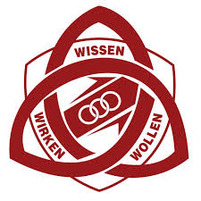

Sean Weilbächer
Contact Me
About Me
Adaptable and detail-oriented professional with experience in customer service and sales.
Education
National Senior Certificate 
Experience
Customer Service Representative
@ iCare Sales & Services Dialogmarketing AG
Provided clear and effective communication, handling a high volume
of inquiries through online channels
Consistently met and exceeded upsell quotas, gaining valuable
experience in sales and crafting persuasive messages
Learned and adapted to new systems quickly, ensuring accurate
data management and workflow efficiency
Refrigeration & Air Conditioning Assistant
@ Windhoek Cooling Systems
Assisted in the installation and repair of refrigeration and airconditioning systems, ensuring optimal performance and customer
satisfaction
Conducted maintenance and servicing of various refrigeration and
air-conditioning machinery to enhance efficiency and reliability
Performed basic administrative tasks, contributing to smooth
operations and effective record-keeping
Pharmacy Assistant
@ Elisenheim Wellness Pharmacy
Managed medication orders and ensured timely restocking of
shelves to maintain optimal inventory levels
Assisted in the dispensary, providing support to pharmacists and
ensuring accurate medication dispensing
Coordinated deliveries, ensuring prompt and reliable service to
customers
Waiter
@ Craft Bistro
Delivered exceptional customer service by taking orders, serving
food and beverages, and ensuring a positive dining experience
Assisted in kitchen operations, supporting food preparation and
maintaining cleanliness
Prepared a diverse range of drinks, showcasing a strong
understanding of beverage recipes and presentation
Skills
Excellent communication and
customer service skills
Strong problem-solving and
troubleshooting abilities
Highly organized with keen
attention to detail
Adaptable to new systems and
technologies
Languages
English: ⭐️⭐️⭐️⭐️⭐️
German:⭐️⭐️⭐️⭐️
© Sean Weilbächer. All rights reserved.